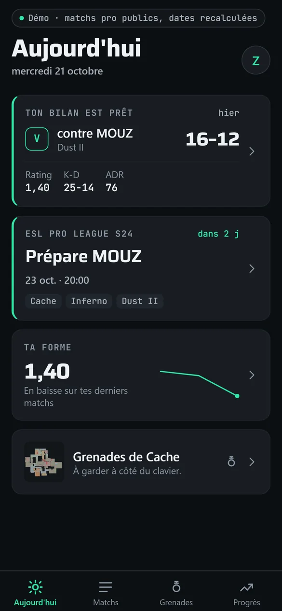
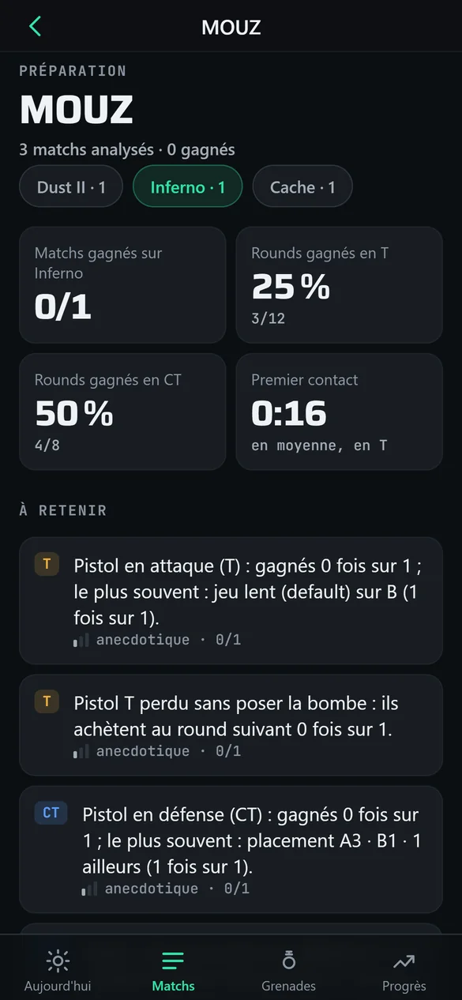
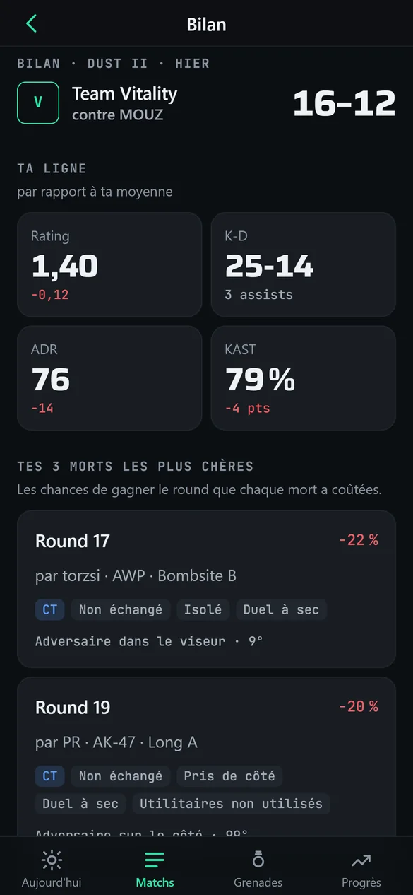
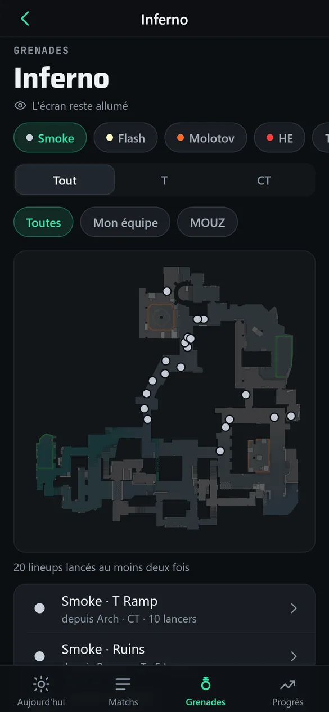
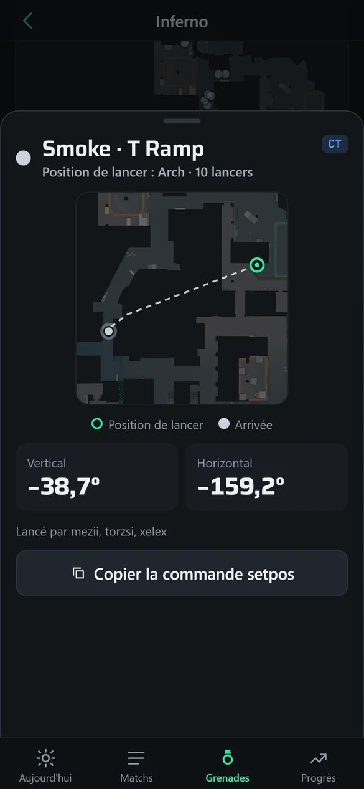
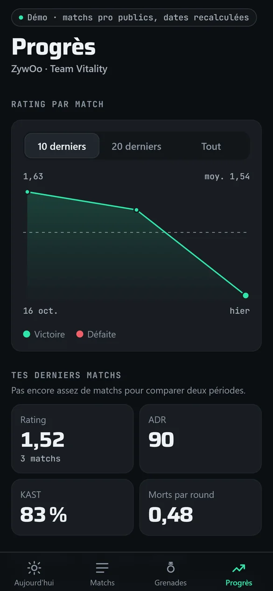

Projet personnel, application mobile (web installable et APK Android), conçue comme pièce de portfolio UI/UX
Sightline mobile : le carnet de match d'un joueur de CS2, dans la poche
Sightline se consulte sur ordinateur. Mais un joueur a besoin de ses informations à d'autres moments : avant le match pour préparer l'adversaire, juste après pour son bilan, et pendant l'entraînement, avec ses grenades sous les yeux à côté du clavier. J'ai conçu une application mobile pour ces moments-là, avec les mêmes comptes et les mêmes données que le site. Je l'ai fait construire par des agents IA en deux jours, de la spécification à la mise en ligne.
Quatre moments dans la semaine d'un joueur
Je suis parti des moments où un joueur sort son téléphone, pas des fonctions du site. L'application ne reprend donc pas tout Sightline : elle répond à quatre besoins précis.






Captures du mode démo, au format iPhone : matchs professionnels publics (Team Vitality contre MOUZ), dates recalculées au jour de l'ouverture.
Les choix d'interface, et pourquoi
- L'écran d'accueil sait à quel moment on est. Le prochain match passe en premier, avec un compte à rebours ; un bilan de moins de 24 heures pas encore ouvert passe devant tout. Cette règle est isolée et testée.
- Dans la préparation, chaque chiffre affiche sa fiabilité (anecdotique, indicatif ou solide) et son effectif. Choix de conception assumé : ne jamais présenter deux rounds comme une tendance.
- Les grenades sont faites pour un téléphone posé près du clavier : l'écran reste allumé, les angles s'affichent en grand, la commande pour s'entraîner se copie en un geste (avec une légère vibration dans la version native).
- Une navigation pensée native : barre d'onglets du système et retour par glissement dans la version native (codée, pas encore testée sur un appareil) ; grands titres qui se replient au défilement et barre d'onglets au même dessin dans la version web.
- Un système visuel à part, « Carnet tactique » : fond sombre, une seule couleur d'accent, le bleu et l'ambre réservés aux deux camps du jeu ; police système pour le texte (dans la version native, elle suit la taille réglée sur le téléphone), Saira pour les titres, chiffres en police à chasse fixe pour qu'ils s'alignent ; grille de 4 points et cibles tactiles de 44 points.
- Du mouvement sobre : transitions de 100 à 220 ms et ressorts amortis, remplacés par de simples fondus si l'utilisateur a demandé moins d'animations ; la fiche d'un lineup suit le doigt et se referme selon l'élan du geste.
- Accessibilité : libellés pour le lecteur d'écran, et un résumé en phrase pour chaque graphique : la courbe de progression est lue comme une phrase qui dit si le rating monte ou baisse.
- Une démo sans compte, avec des données embarquées de matchs pros publics plutôt qu'un compte partagé : un compte public aurait exposé, et laissé modifier, les données de l'équipe.
- Un cinquième onglet, Stratégies, ajouté le 21 octobre : consulter sur le téléphone le cahier de stratégies de l'équipe (positions, grenades, plan), en lecture seule. La création reste sur PC, pour ne pas surcharger un petit écran.
Gratuit, sans passer par un store
Contrainte de départ : 0 €. Publier sur l'App Store coûte 99 € par an, sur Google Play 25 $ une fois. L'application est donc distribuée comme application web installable (on l'ajoute à l'écran d'accueil depuis le navigateur) et comme APK Android compilé gratuitement dans le cloud. Les notifications passent par le web, car les notifications natives demandent le compte Apple payant sur iPhone (et Firebase sur Android). Le jour où les stores seront utiles, le code n'aura pas à changer.
Ce qu'il y a sous le capot
- Les mêmes comptes que le site. Le serveur accepte désormais une connexion par jeton pour l'application native ; sur le web, l'application garde le cookie de session sécurisé du site et ne stocke aucun jeton dans le navigateur.
- Des notifications quand un match est analysé ou qu'un rapport de préparation est prêt. Le serveur n'accepte que les services de notification connus, pour qu'on ne puisse pas lui faire appeler n'importe quelle adresse.
- Un écran blanc sur iPhone, trouvé en test réel et corrigé. Sous Safari, le chargement simultané de plusieurs polices restait bloqué et l'application ne s'affichait jamais. Chaque police passe désormais par l'API FontFace, sans feuille de style partagée, et l'application n'attend plus ses polices plus de 4 secondes : si l'une échoue, elle s'affiche avec la police de secours.
- Le plein écran sur iPhone une fois l'application installée, en respectant l'encoche et la barre d'accueil (vérifié dans un navigateur qui simule l'iPhone).
- Une démo légère : environ 400 Ko de données embarquées, sous l'objectif de 1,5 Mo fixé dans la spécification.
Résultats vérifiables
- ComptéSpécification et plan écrits avant le code, puis 18 commits dans le dossier de l'application, du 19 au 21 octobre 2026.
- Compté66 tests de l'application au vert (15 fichiers) au dernier passage enregistré, le 21 octobre, et 7 tests côté serveur pour la connexion par jeton, l'application web et les notifications.
- Constaté14 captures du mode démo dans Chrome au format iPhone (10 vues différentes) : aucun écran blanc, aucun chargement bloqué, aucune erreur.
- ConstatéEn ligne en version web installable, avec un APK Android en plus.
Limites connues
- La version native n'a jamais tourné sur un vrai téléphone. Seule la version web installable a été testée, dans des navigateurs simulés et sur mon iPhone.
- Pas de mode hors connexion : l'application se met à jour à chaque déploiement, son service worker ne met rien en cache.
- Quelques cibles sous 44 points : les filtres font 36 points (zone de toucher élargie seulement dans la version native) et les sélecteurs segmentés 40 points.
- Français et thème sombre seulement ; l'onglet Stratégies sert à consulter, pas à modifier.